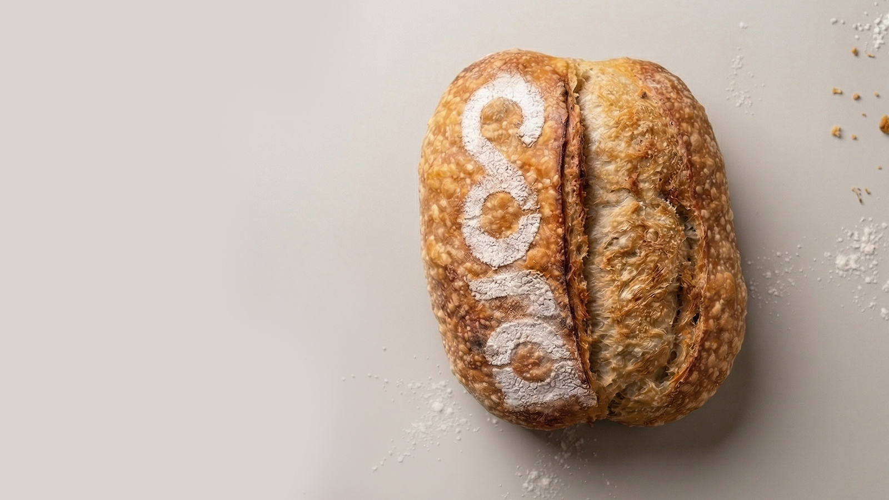
Fermentação natural longa e levain autoral. Pão de verdade na sua porta toda semana.
Niterói e Rio de Janeiro.
Sua assinatura começa pelo Original ou Integral. Toda semana dá pra trocar por outros pães do cardápio, alguns com acréscimo.
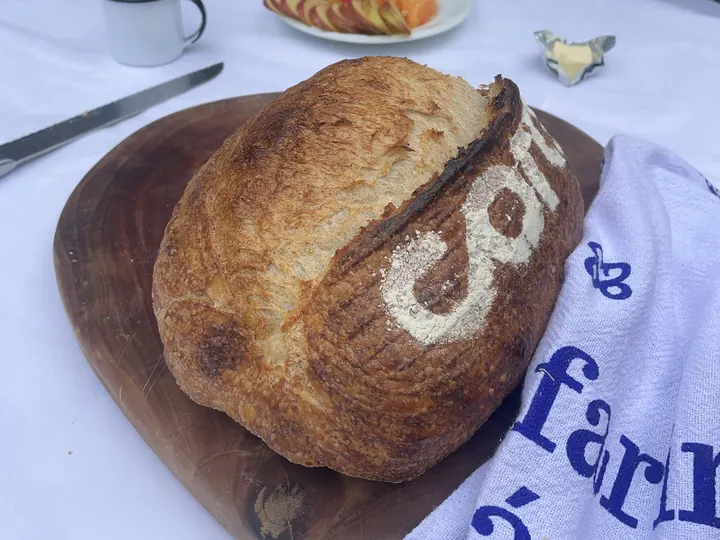
Aquele pão que começou a Cora. Versátil, vai do café ao jantar. Blend de farinha italiana com toque de integral brasileira e 24 horas de fermentação.
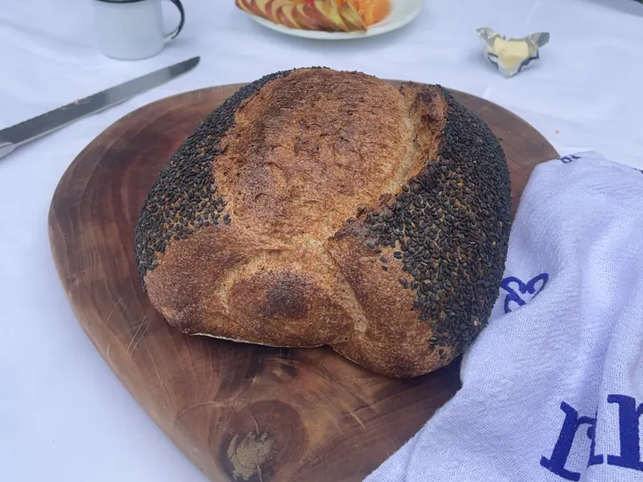
Integral leve e macio, daqueles que dá pra comer todo dia. Farinha integral da Fazenda Vargem, azeite extra virgem que traz maciez, gergelim na crosta.
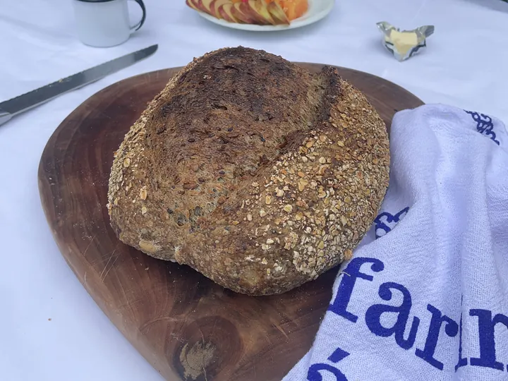
Seis grãos torrados e escaldados na massa, crosta de aveia. Hidratação alta, miolo úmido, sabor que ganha em cada mordida.
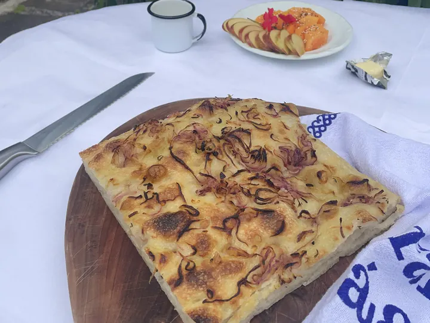
Receita da Ligúria, no norte da Itália. Miolo macio, crosta dourada, azeite extra virgem generoso. Cebola roxa macerada, azeite com alecrim e finalização com flor de sal.
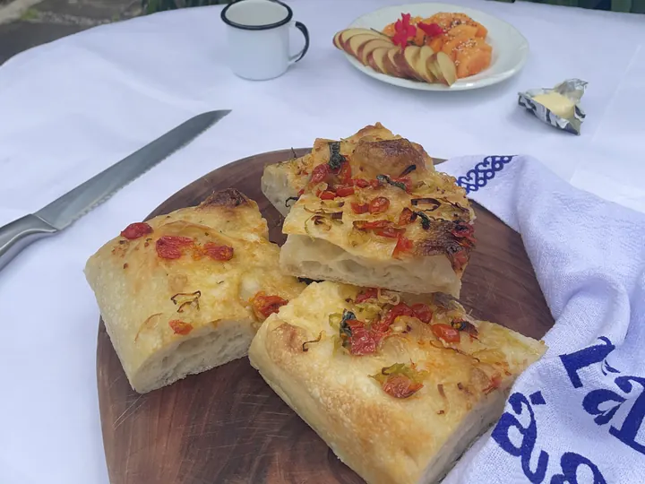
Tomate cereja da horta da Cora e alho-poró, curtidos de véspera, na massa de focaccia da Cora. Finalizada com flor de sal.
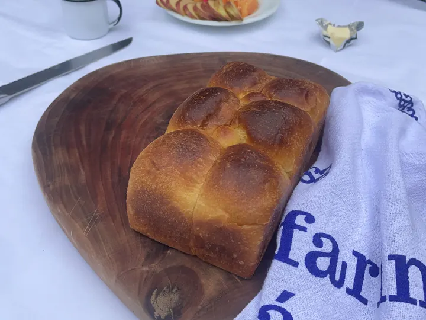
Massa amanteigada com ovos e mel. Macio, levemente adocicado. Pro lanche da escola e o café da manhã sem pressa.
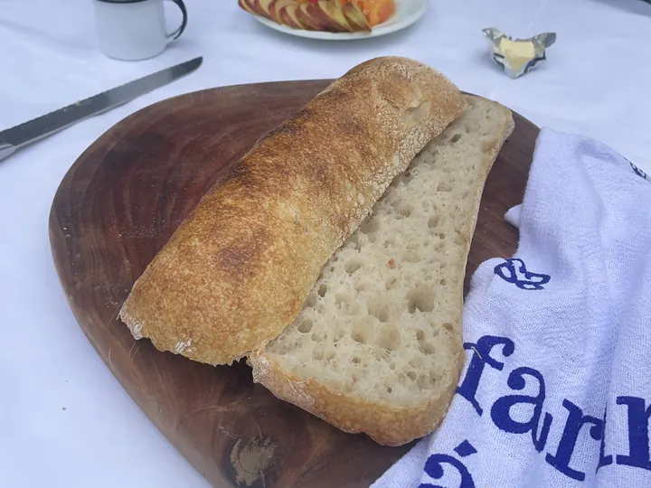
Hidratação alta deixa o miolo cheio de alvéolos. Casca fina e crocante, formato achatado de chinelo, que é o que ciabatta significa em italiano. O pão do sanduíche.
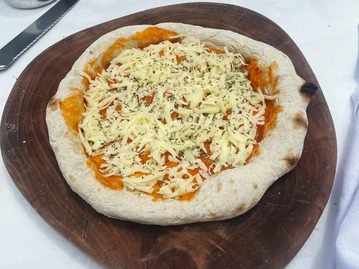
Massa de fermentação natural e molho de tomate da Cora, pré-assada. A mussarela e o orégano vão por cima, e o queijo derrete só no seu forno.
1 a 3 pães por semana, Original ou Integral. Pra todo dia ou pra ocasiões especiais. Pode mudar quando quiser.
Só assamos o que foi pedido. Fermentação longa, sem pressa, sem desperdício.
Toda semana. Niterói e Rio de Janeiro.
A Cora entrega toda semana em Niterói e no Rio. A gente amplia a produção aos poucos — deixa seu contato e avisamos quando abrir mais vagas.
Fila do pão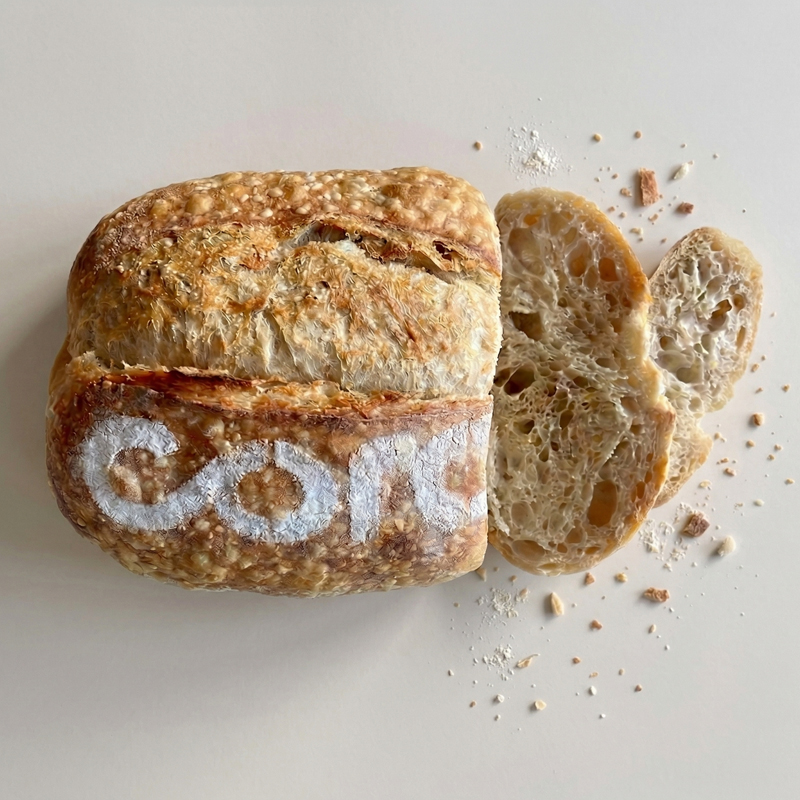
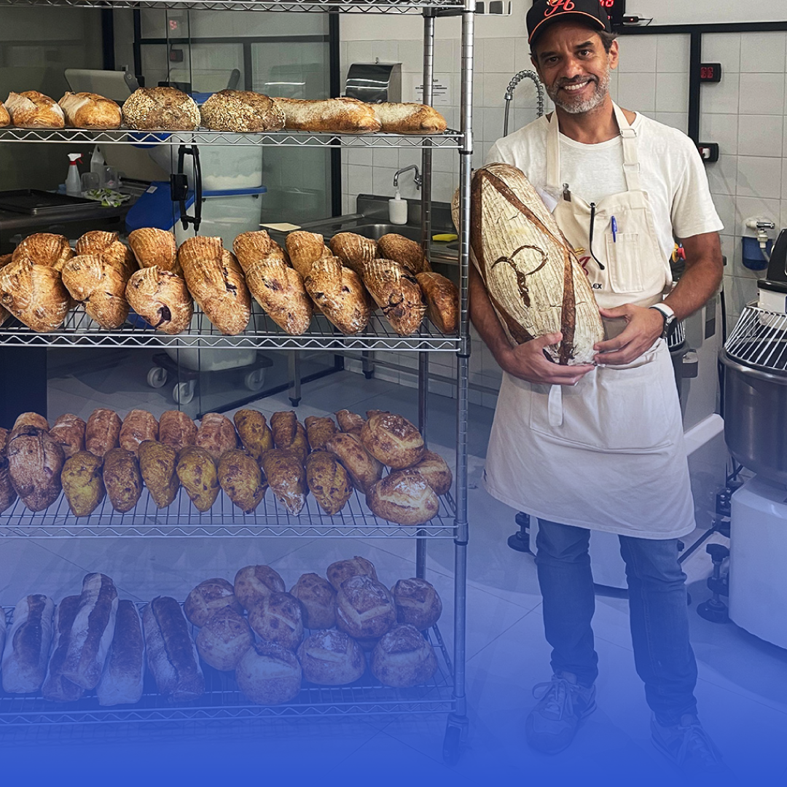
Estudo panificação desde 2015, a partir de vídeos, artigos e muitos erros. Em 2017, ganhei um levain de presente do pai de um amigo, confeiteiro de mão cheia. Na foto, 2026: o primeiro curso presencial. Foi ali que a Cora começou a se materializar.
Hugo, padeiro apaixonado